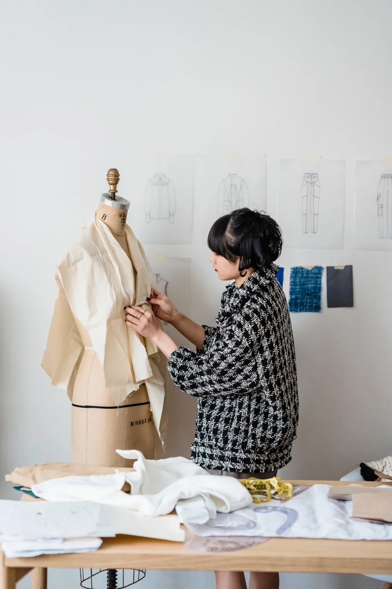
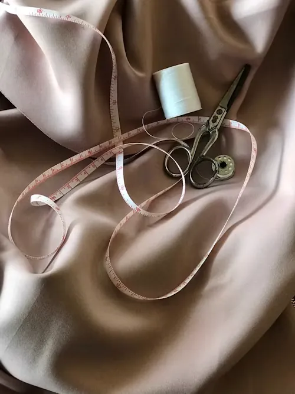
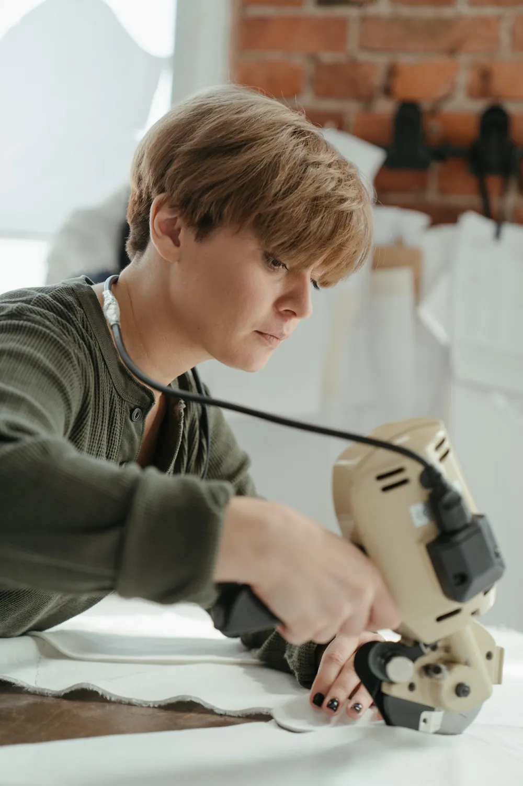
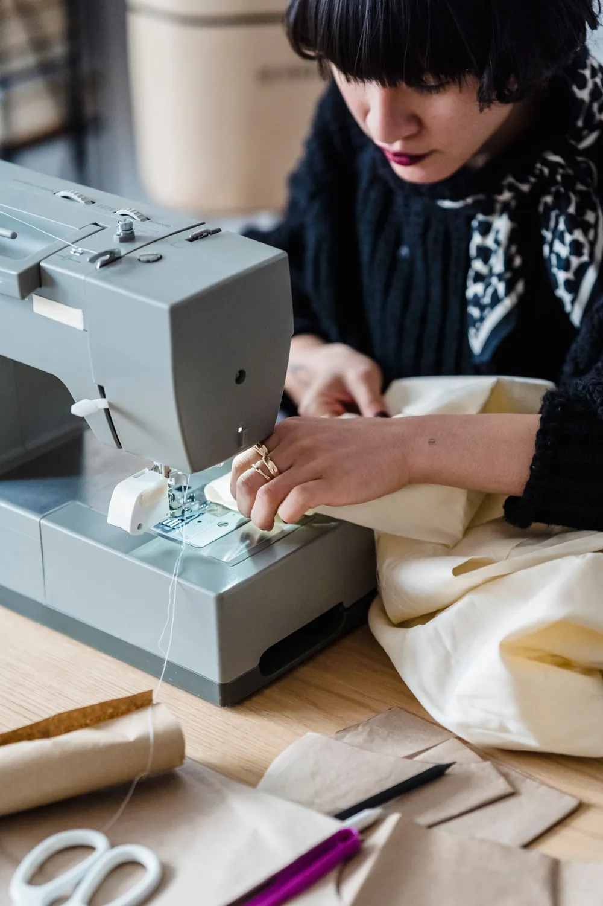
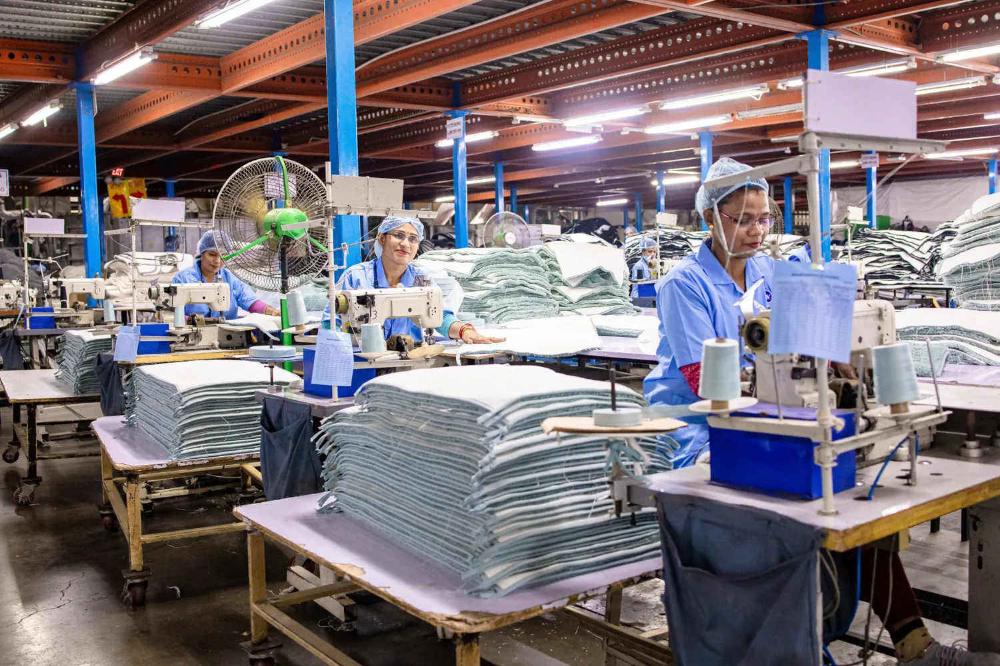
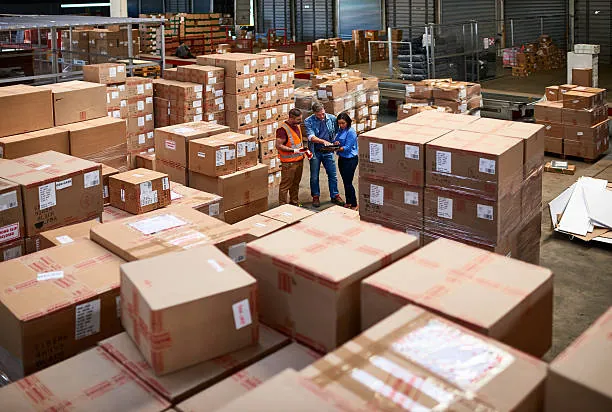

Ideas become patterns on the mannequin — fit, fall and detailing are perfected first.

Silks, linens and cottons are chosen, measured and tested for feel and colour.

Layered fabric is cut with machines for exact, repeatable pieces.

Experienced tailors stitch each garment with clean seams and neat finishing.

A well-organised line handles bulk orders without compromising quality.

Final check, folding, labelling and safe packing — ready to ship to you.
Launching a label or restocking your boutique? Send us your sketches, samples or reference photos and we'll handle the rest.
Send us your sketch or reference photo on WhatsApp for a quick quote.